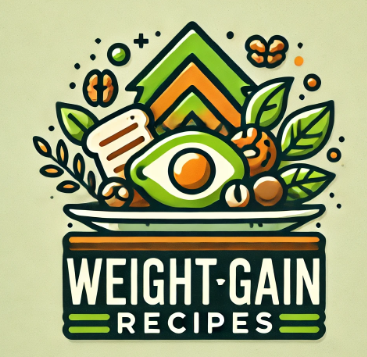
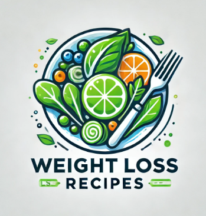

Nutrition for Weight Gain
Nutrition tips and plans for gaining weight effectively and safely. Focus on calorie-dense foods, protein-rich diets, and strength training to support muscle growth.
Why Nutrition Matters
Proper nutrition supports a healthy lifestyle and helps you achieve your goals, whether it's weight gain or weight loss. It's the foundation of overall well-being.
Nutrition for Weight Loss
Nutrition tips and plans for losing weight effectively and sustainably. Emphasize whole foods, calorie control, and balanced meals to support your goals.

Explore Recipes
Choose options for weight gain or weight loss recipes.

By understanding the importance of nutrition and making healthy choices, you'll achieve your fitness goals faster. Use the resources provided above to build a meal plan that is right for you.